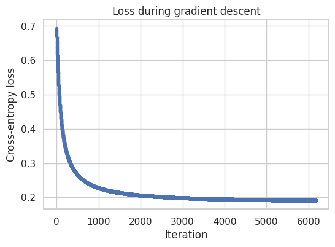

These materials were developed with assistance from AI tools. All content has been reviewed and edited by the instructor, who takes final responsibility for its accuracy, clarity, and appropriateness for the course. Students should treat these materials as instructor-reviewed course content while applying the same critical judgment they would use with any technical material. Please report any suspected errors or unclear explanations to ghunt@wm.edu.
We now consider a binary outcome, encoded as \[
y \in \{0,1\}
\] where 0 and 1 are class labels rather than measurements on a meaningful numerical scale. This encoding is conventional: reversing the labels would reverse which direction of the score favors each class, but would not change the kind of problem being modeled. As before, \(x\in\mathbb{R}^D\).
Following the ERM framework, we first choose a model class. We use a score that is linear in the parameters: \[
s_w(x) = w^\top x.
\] When the dependence on \(w\) is clear, we write \(s(x)\) for \(s_w(x)\). Higher scores favor class 1 and lower scores favor class 0. Because the score can be any real number, it is not itself a probability. To map it into \((0,1)\), define
if \(w^\top x \gg 0\), then \(\sigma(w^\top x) \approx 1\)
if \(w^\top x \ll 0\), then \(\sigma(w^\top x) \approx 0\)
if \(w^\top x = 0\), then \(\sigma(w^\top x) = 1/2\)
At a score of zero the two classes receive equal support; the sign determines which class is favored, and the magnitude measures how strongly. Thus \(w^\top x\) does the linear modeling, while \(p_w(x)\) is interpreted as the predicted probability of class 1.
5.1 Cross-Entropy Loss
We want small loss when \(p\) agrees with the observed class and large loss when it does not. The cross-entropy loss as a function of the predicted probability is \[
L_{\mathrm{CE}}(y,p)=-\Big(y\log p+(1-y)\log(1-p)\Big).
\] As a function of the score \(s\), this becomes \[
\ell(y,s)=L_{\mathrm{CE}}(y,\sigma(s))
=\log(1+e^s)-ys.
\] The probability form is useful for interpretation, while the score form is often easier to differentiate and optimize.
5.1.1 Understanding the loss
For the two possible labels, \[
L_{\mathrm{CE}}(1,p)=-\log p,
\qquad
L_{\mathrm{CE}}(0,p)=-\log(1-p).
\] When \(y=1\), the loss approaches zero as \(p\to1\) and diverges as \(p\to0\); when \(y=0\), the roles are reversed. At \(p=1/2\), either class gives loss \(\log 2\). Thus the loss is small for correct, confident predictions and grows without bound as the model becomes confidently wrong.
5.1.2 Why not squared error?
Squared error on the predicted probability is a valid alternative: \[
L_{\mathrm{SE}}(y,p)=(y-p)^2.
\] Cross-entropy penalizes confident mistakes more strongly and, with a linear score and sigmoid, gives a convex objective in \(w\); the squared-error composition generally does not. The following plot compares them:
For observations \((x_1,y_1),\ldots,(x_N,y_N)\), the empirical risk is the average cross-entropy loss: \[
\begin{aligned}
\hat{R}(w)=\frac{1}{N}\sum_{n=1}^N
\left[\log(1+e^{w^\top x_n})-y_nw^\top x_n\right]
&= \frac{1}{N}\sum_{n=1}^N-\Big(y_n \log p_n + (1-y_n)\log(1-p_n)\Big)
\end{aligned}
\] ERM chooses \[
\hat{w}=\arg\min_w\hat{R}(w).
\] The factor \(1/N\) does not affect the minimizer and is sometimes omitted. This has the same structure as least squares: choose a score class, choose a loss, and minimize the resulting empirical risk. Only the loss and optimization method have changed.
5.2 Vector Form
Let \(X\in\mathbb{R}^{N\times D}\) have row \(n\) equal to \(x_n^\top\), and let \[
y=(y_1,\dots,y_N)^\top.
\] The score and probability vectors are \[
Xw\in\mathbb{R}^N,
\qquad
p=\sigma(Xw),
\] where the sigmoid is applied elementwise, so \(p_n=\sigma(x_n^\top w)\). Both vectors have length \(N\).
5.3 No Closed-Form Solution
Unlike the least-squares objective, \(\hat R(w)\) is not quadratic in \(w\). Setting its gradient equal to zero produces nonlinear equations in \(w\) that cannot be rearranged into an analogous closed-form expression for \(\hat w\). We therefore use an iterative optimization method such as gradient descent.
The absence of a closed form does not make the problem poorly behaved: the logistic-regression objective is convex in \(w\).
5.4 Gradient Descent
The gradient \(\nabla \hat R(w)\) describes how the objective changes locally: the gradient points in the direction of steepest increase, so its negative points in the direction of steepest decrease. Starting from an initial value \(w^{(0)}\), gradient descent repeats \[
w^{(t+1)}=w^{(t)}-\eta\nabla\hat R(w^{(t)}),
\] where the gradient is evaluated at the current parameter vector \(w^{(t)}\). The update takes a step downhill to produce \(w^{(t+1)}\), then recomputes the gradient at that new point. Repeating these local steps traces a path across the objective surface toward a minimizer rather than solving for it in one algebraic step.
The learning rate \(\eta>0\) controls the step size. If it is too small, progress is slow; if it is too large, an update can overshoot the low part of the surface and the algorithm may fail to converge. In practice, iterations continue until the objective, parameters, or gradient change very little. The remaining task is to compute \(\nabla\hat R(w)\) for logistic regression.
The sigmoid derivative is \[
\frac{d\sigma(t)}{dt}=\sigma(t)(1-\sigma(t)).
\]
Now let \[
p_n = \sigma(x_n^\top w).
\]
For the \(n\)th loss, \[
\ell_n = -\Big(y_n \log p_n + (1-y_n)\log(1-p_n)\Big),
\]
print("Final weights:", w_hat)print("Final loss:", losses[-1])print("Actual num steps:",len(path))
Final weights: [2.00578075 2.81678148]
Final loss: 0.1882535534876213
Actual num steps: 2192
We can plot the loss v. iteration:
Show code
plt.figure(figsize=(6, 4))plt.plot(losses, marker="o", markersize=3)plt.xlabel("Iteration")plt.ylabel("Cross-entropy loss")plt.title("Loss during gradient descent")plt.grid(True)plt.show()

We can also view the optimization path in parameter space. Each point is one gradient-descent iterate; the contours show values of the same cross-entropy objective.
The ERM problem above selects \(\hat w\) by minimizing cross-entropy, but the fitted model first gives us a score \(s_{\hat w}(x)\) and a probability \(p_{\hat w}(x)\), not a hard class label. As in the ERM framework from the introductory lecture, we still need an action that converts the fitted score into a prediction.
One way to describe a binary action is to use two class scores, \[
s_k(x)=w_k^\top x,
\qquad
\hat y=\arg\max_{k=0,1}s_k(x).
\] The two scores are actually redundant: only their difference affects the prediction. In particular: \[
\hat y=1
\quad\Longleftrightarrow\quad s_1(x) \geq s_0(x) \quad\Longleftrightarrow\quad s_1(x)-s_0(x) \geq 0 \quad\Longleftrightarrow\quad
s_1(x)-s_0(x)=(w_1-w_0)^\top x\ge0.
\] Defining \(w=w_1-w_0\) gives the single score \(s_w(x)=w^\top x\) used in our ERM problem; it represents how much the model favors class 1 over class 0. Equivalently, class 0 can be treated as the reference class by setting \(s_0(x)=0\) and \(s_1(x)=w^\top x\). After fitting \(\hat w\), either representation gives the prediction rule \[
\hat y=
\begin{cases}
1 & \text{if } \hat w^\top x\ge0,\\
0 & \text{otherwise}.
\end{cases}
\] Because \(\sigma\) is increasing and \(\sigma(0)=1/2\), thresholding the score at zero is equivalent to thresholding the predicted probability at one-half: \[
\hat y=1\quad\text{if }p_{\hat w}(x)\ge\frac12.
\]
5.5.1 Decision Boundary
The decision boundary is where the predicted class changes: \[
\hat{w}^\top x = 0.
\] It is linear in the chosen features.
We can plot the decision boundary learned from the previous problem:
The columns of \(X\) may be measured covariates or engineered features such as powers, interactions, or transformations of the original variables. Logistic regression remains linear in \(w\) and has a linear boundary in the chosen feature space, but the boundary need not be linear in the raw inputs. For example, including \(x_1^2\) or \(x_1x_2\) can produce a curved boundary in the original input space.
This is both useful and limiting: the model can represent nonlinear boundaries through feature engineering, but it cannot represent a complicated boundary unless the chosen features make that boundary accessible.
5.6.1 Perfect Separation
Data are perfectly linearly separable if some \(w\) satisfies \[
y_n = 1 \implies w^\top x_n > 0, \quad
y_n = 0 \implies w^\top x_n < 0.
\] Then \(cw\) gives the same classifications for every \(c>0\), while the cross-entropy loss approaches zero as \(c\to\infty\). Consequently, the unregularized objective has no finite minimizer: an optimizer may return very large coefficients or issue a warning. Regularization, introduced later, prevents this behavior.
5.7 Code Examples
Show code
import numpy as npimport pandas as pdimport matplotlib.pyplot as pltimport seaborn as snsfrom sklearn.linear_model import LogisticRegressionfrom sklearn.metrics import confusion_matrix, ConfusionMatrixDisplay, classification_reportfrom sklearn.preprocessing import StandardScaler, PolynomialFeaturesfrom sklearn.pipeline import make_pipelinefrom sklearn.inspection import DecisionBoundaryDisplaysns.set_theme(style="whitegrid")plt.rcParams["figure.figsize"] = (6, 4)
url ="https://gist.githubusercontent.com/slopp/ce3b90b9168f2f921784de84fa445651/raw/penguins.csv"penguins = pd.read_csv(url)# clean up and shufflepenguins = penguins.dropna().copy().sample(frac=1, random_state=4222)# for ease of visualization, let's subset down to two vars + speciescols = ["flipper_length_mm", "bill_depth_mm", "species"]penguins = penguins[cols]penguins.head()
flipper_length_mm
bill_depth_mm
species
318
196.0
19.1
Chinstrap
23
185.0
18.1
Adelie
97
196.0
18.5
Adelie
181
220.0
15.3
Gentoo
200
213.0
13.3
Gentoo
Binary logistic regression: Adelie vs Chinstrap
First, retain the Adelie and Chinstrap observations:
Show code
# subset down to only Adelie and Chinstrapd = penguins.loc[penguins["species"].isin(["Adelie", "Chinstrap"]), cols].copy()d["species"].value_counts()
species
Adelie 146
Chinstrap 68
Name: count, dtype: int64
In a Jupyter environment, please rerun this cell to show the HTML representation or trust the notebook. On GitHub, the HTML representation is unable to render, please try loading this page with nbviewer.org.
A confusion matrix compares true labels (rows) with predicted labels (columns): \[
\begin{array}{c|cc}
& \text{Pred 0} & \text{Pred 1} \\
\hline
\text{True 0} & \text{TN} & \text{FP} \\
\text{True 1} & \text{FN} & \text{TP}
\end{array}
\] TP and TN are correct predictions. FP is a false alarm for class 1, while FN is a missed class-1 observation. Unlike accuracy alone, the table distinguishes these two kinds of error, which can matter when classes are imbalanced or the errors have different costs.
\[
\text{Precision}=\frac{\text{TP}}{\text{TP}+\text{FP}},
\qquad
\text{Recall}=\frac{\text{TP}}{\text{TP}+\text{FN}}.
\] Precision asks: among observations predicted as class 1, what fraction are actually class 1? High precision means few false positives. Recall asks: among the actual class-1 observations, what fraction did we find? High recall means few false negatives. Their harmonic mean is \[
\text{F1}=2\frac{\text{Precision}\cdot\text{Recall}}
{\text{Precision}+\text{Recall}}.
\] F1 is high only when both precision and recall are high.
Scikit-learn provides these metrics through classification_report:
In a Jupyter environment, please rerun this cell to show the HTML representation or trust the notebook. On GitHub, the HTML representation is unable to render, please try loading this page with nbviewer.org.
In a Jupyter environment, please rerun this cell to show the HTML representation or trust the notebook. On GitHub, the HTML representation is unable to render, please try loading this page with nbviewer.org.
Scikit-learn returns finite coefficients because its numerical optimizer stops after reaching a tolerance, not because the unregularized objective has a finite minimizer. Near-perfect training accuracy and probabilities close to 0 or 1 are warning signs.